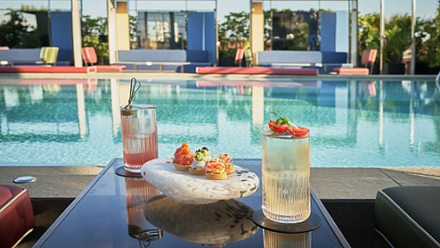
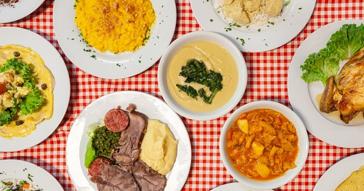

Restaurants
Milan is a city full of restaurants, where you can eat well at all levels - Michelin starred restaurants, bistros, trattorias - and try every type of cuisine, from ethnic (Japanese, Korean, Peruvian, Chinese, Mexican, etc.) to traditional.
Here are some restaurants where you can taste the splendid Milanese cuisine.
Among the new generation pizzerias, here is a case of success in the city, Pizzium: a restaurant that continues to expand with new openings (6 in total), well-run, so much so as to suggest it if you want a good pizza without touching 30 euros.
Because good pizza in Milan is not always taken for granted and here the toppings are sought after, but not for this reason eccentric.
Light dough for an overall effect that is never heavy (even if you take Umbria with porchetta and potatoes).
It starts with the simple Marinara (6 euros) and moves on to the slightly more structured regional ones, which reach a maximum of 12 euros. Among those to try there are: Lazio (mozzarella, bacon, pecorino romano Dop, egg yolk and black pepper),Puglia (burrata, yellow datterini, pork neck, olives, crumbled tarallo) and the classic Bufala (also available without lactose).
For lunch from Monday to Friday, the 10 euro formula is interesting, which includes a dish of your choice among a dozen proposals ranging from pizza margherita to salad, from lasagna to Sorrento-style cavatelli.
If you want to feel at home, then, we suggest you try thepanuozzum, the legendary panuozzo, filled with meatballs with sauce.
He is based in:
Ceresio 7 Pools & Restaurant is a panoramic restaurant with terrace and swimming pools serving cocktails and contemporary Italian cuisine.
Elio Sironi è un autentico esempio di spontaneità e di professionalità.»"Exuberant by nature, full of creativity, curious about excellence, immediate in expressing himself, chef Elio Sironi is an authentic example of spontaneity and professionalism."
The kitchen is managed by Executive Chef Elio Sironi and is founded on consolidated bases throughout years: simplicity, genuineness and respect of the client.The distinctive signature of the Chef is the “exacting simplicity” through the rediscovering of Italian cuisine great classics, re-elaborated to value real flavours and consistency in dishes. The unlimited quality of the ingredients and the use of the traditional cooking technique are basics for our kitchen.
Trattoria di San Filippo for years it has been offering its customers the best of Italian cuisine every day, with a scrupulous and careful selection of ingredients and raw materials that are used for the preparation of classic and innovative recipes.
In the Italian tradition, the first courses have a central role, which is why the menu includes many fresh and very tasty choices to satisfy every type of palate, using products according to the season to provide customers with only the best.
For side dishes Instead, the menu changes every day to ensure not only a wide choice and a great variety of products but also to follow the season and take advantage of the products of the earth.
The desserts are scrupulously homemade and allow you to have an excellent end of the meal.
The ingredients chosen are as for all the freshest preparations to guarantee only the highest quality to customers.
If you want to know what to do with tipping, click here..